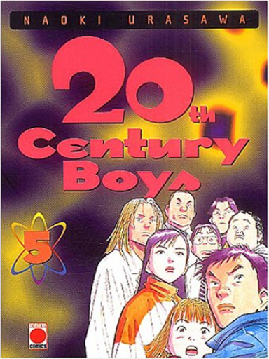

Books
Movies
Albums
Videogames
Games
BD
BD Camille
Blu-ray
Business
Camille
Comics
Cooking
Lego
Manga
Pauline
Photography
Star Wars
Travel
TV Shows
Un livre dont vous êtes le héro
Vinyl
Walt Disney
76
77
78
79
80
astérix, tome 39 - et le griffon
albert uderzo, rené goscinny
20th century boys, tome 1
naoki urasawa
5
20th century boys, tome 2
naoki urasawa
4
20th century boys, tome 3
naoki urasawa
20th century boys, tome 4
naoki urasawa

20th century boys, tome 5
naoki urasawa
20th century boys, tome 6
naoki urasawa
5
20th century boys, tome 7
naoki urasawa
20th century boys, tome 8
naoki urasawa
20th century boys, tome 9
naoki urasawa
20th century boys, tome 10
naoki urasawa
20th century boys, tome 11
naoki urasawa
76
77
78
79
80


 Made with Delicious Library Made with Delicious Library
Made with Delicious Library Made with Delicious Library